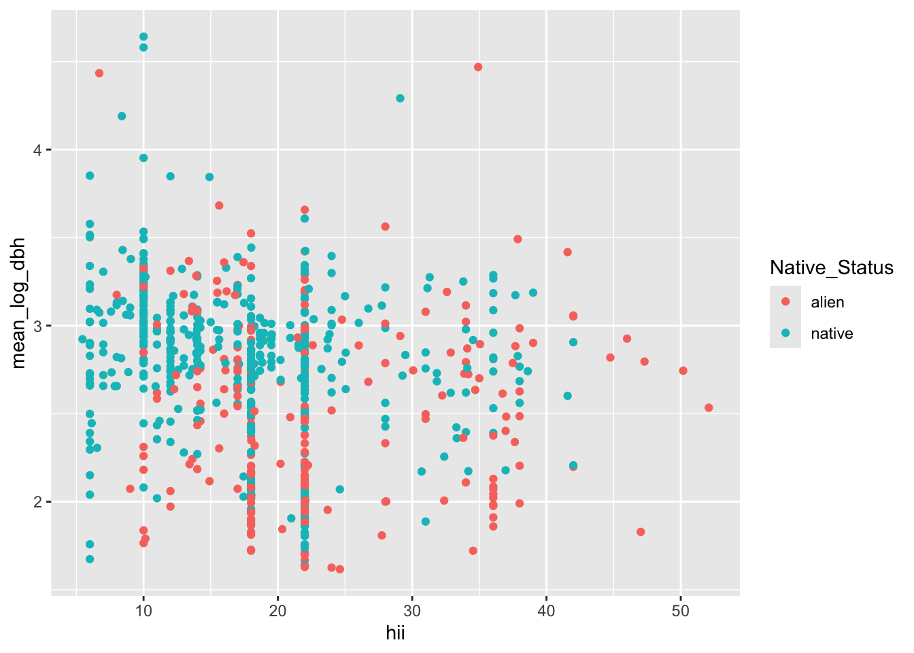
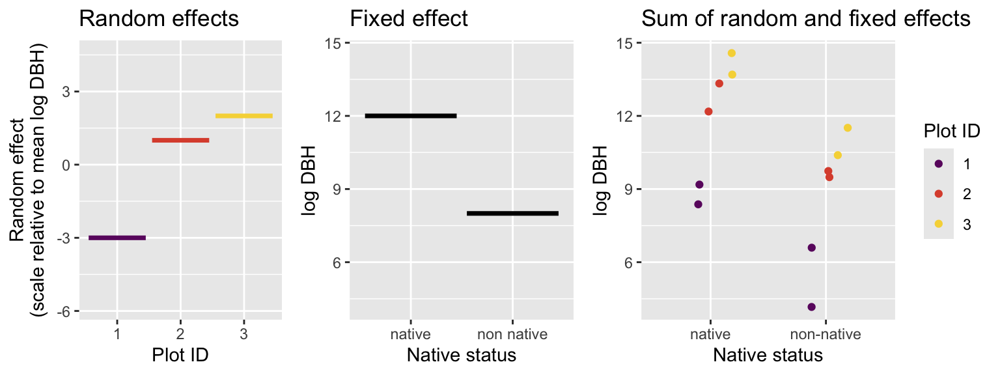
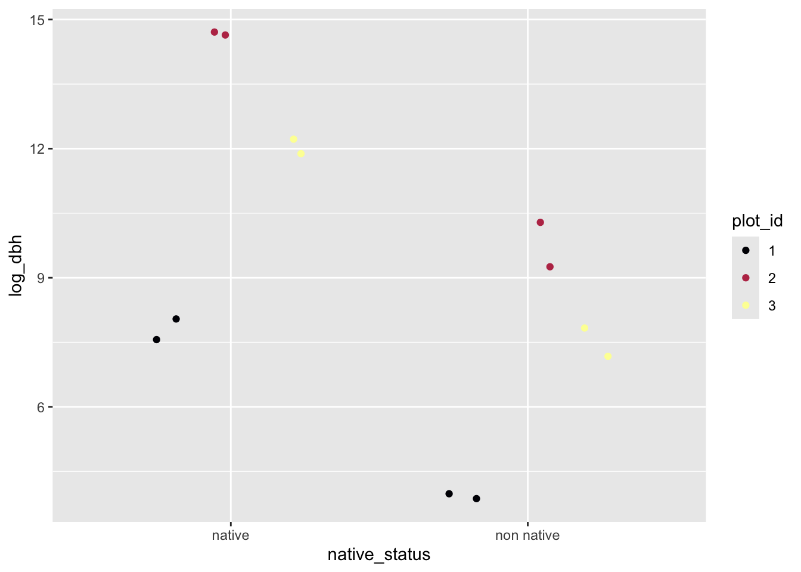

# note: we are picking up where the last lab left off
# with a data object `dat`
# we need to group by both plot and native status
# because we still want to compare native to
# non-native
dat_plot <- group_by(dat, PlotID, Native_Status) |>
summarize(hii = first(hii),
mean_log_dbh = mean(log_dbh_cm)) |>
ungroup()16 What are random effects?
16.1 Identifying sampling units
We have talked several times about sampling and sampling units, whether it is identifying sampling units when making data tidy, or discussing the i.i.d (independent and identically distributed) assumption of likelihood methods. And yet in the last few sections where we introduced linear models with normally-distributed random variables, we did not directly engage the question of, what is the sampling unit? We used individual trees as sampling units, or replicates, which in some ways seems reasonable—we are interested in DBH, which is a measurement taken at the level of individual trees. However, it is also reasonable to imagine that individual trees growing in the same survey plot are not fully independent. They could be interacting with each other and they are all certainly experiencing a shared environment. We only analyzed one aspect of that shared environment, the human impact. But all the other environmental variables measured for those plots, and all the variables not measured or not even understood by ecologists, might also be impacting DBH. The possibility that trees in the same plot are not independent means individual trees might be pseudo replicates. Pseudo replication is a problem because it can bias our parameter estimates, and once we get to testing hypotheses with models, it can also give us too much confidence in our results leading to “false positives” or Type I error.
In light of pseudo replication, perhaps the survey plot should be our sampling unit, i.e. maybe one replicate should be one plot, not one tree. Let’s have a look at that scenario, first by preparing a new data object which holds DBH information summarized at the plot level
Now let’s make a visualization
ggplot(dat_plot, aes(hii, mean_log_dbh, color = Native_Status)) +
geom_point()
The graphic looks a lot more manageable when each dot is a survey plot rather than individual tree. But reflecting on this visualization we should consider two things:
- we still have pseudo replication: each survey plot is represented by both a mean for native trees and a mean for non-native trees
- we have lost so much of our data by collapsing each tree down to just a mean for a survey plot
Neither thing is good! And so we are left wanting a better method. Enter random effects and the mixed effects models they allow us to make.
16.2 Understanding random effects
Random effects are one strategy for trying to deal with pseudo replication while still leveraging all the data (e.g. not reducing multiple observations to a single mean value). A model with both fixed effects and random effects is called a mixed effects model. Fixed effects are exactly what we’ve already been working with: the slope of log DBH changing across human impact, the difference between native and non-native trees. Those are fixed effects because we are trying to estimate the one best value for those parameters—we maximize the likelihood function to find the one best maximum likelihood estimate for the slope and the one best maximum likelihood estimate for the difference between means of native and non-native trees.
Random effects are not fixed—they represent another source of random noise in our models. The reason random effects are useful is that they let us focused on modeling what we are really interested in (the fixed effects) while still accounting for complexities of the data. They give us more robust and reliable answers to the questions we are studying with model.
We will take two approaches to understanding what random effects are: conceptually and by simulating data with random effects.
16.2.1 The concept of random effects
Conceptually random effects account for the possibility that multiple observations from the same sampling unit—for example multiple trees from the same survey plot—might share some unaccounted for properties in common. In our case with trees in survey plots we could easily imagine that shared environmental conditions, conditions that we don’t know about or cannot measure, have a similar impact on the growth of all trees in the sample plot. Thus, for example, the DHB’s of two randomly sampled trees from the same plot might be more similar, on average, than the DBH’s of two randomly sampled trees from different plots.
We might also imagine that these unobserved or unaccounted for conditions within our survey plots act like the random addition of multiple different impacts. Thus the Central Limit Theorem applies and we could imagine that the sum total of all the unaccounted for conditions within a survey plot follows a normal distribution. Thus the effect of those unaccounted for conditions can be modeled as adding a little bit of normally-distributed noise to each observation within the same plot. The value of that “noise” is the same for observations within the same plot but different across plots.
An example will help illustrate this idea. Suppose our study of trees consists of only three survey plots and there are only four tress in each plot, two native and two non-native. We are only interested in the (fixed) effect of native versus non-native. Imagine our data looks like this:

We can see that because Plot_1 has a value of -3 for the random effect, our measurements for DBHs from Plot_1 are consistently lower than the other plots. Perhaps Plot_1 is water limited, perhaps its on a younger lava flow, perhaps there is some unknowable quirk of its ecology and evolution that make it have smaller trees. We don’t know and actually we don’t need to know, at least not for the singular purpose of only understanding how native trees differ from non native trees. But if we want to understand how native trees differ from non native trees, we would be wise to account for the random effect of plot, otherwise our conclusions could be off.
What our above visualization means is that we are modeling the value of any given observation as the sum of the plot-level random effect and the impact of the fixed effect. We are also still assuming that observations come from a normal distribution, so there is some additional noise that makes each observation different, even if they come from the same plot and belong to the same native status.
In equations that looks like the mean for each data point (each individual tree’s DBH) is
\[ \mu_{i,g} = e_i + \mu_g \]
where \(\mu_g\) is the group mean for whichever group we’re in (native or non-native) and \(e_i\) is the random effect of being in plot \(i\). That random effect comes from a normal distribution:
\[ e_i \sim \mathcal{N}(0, \sigma_\text{rand}) \]
with a mean of 0 and some unknown standard deviation \(\sigma_\text{rand}\).
Then finally, we can say each actual measured DBH comes from another normal distribution
\[ y \sim \mathcal{N}(\mu_{i, g}, \sigma) \]
We can use those equations to simulate data coming from this kind of random effects model.
16.2.2 Simulating data from a model with random effects
Again, a model with random effects is called a mixed effects model. To simulate from a mixed effects model we need to allow the mean of each observation to be affected by both the fixed effect and random effect. In our simulation, let’s follow the “study design” of the above figure we used for explaining the concept of random effects: two levels of the fixed effect, three plots, four observations per plot
Let’s start with calculating the fixed effect, this is similar to what we’ve seen before
# a vector indicating if each tree is
# native or non-native
nat_stat <- rep(c("native", "native",
"non native", "non native"),
3)
# the means for each group
mu_nat <- 12
mu_non <- 8
# a vector with the mean for each tree
# whether it is native or non native
means_fixed <- ifelse(nat_stat == "native", mu_nat, mu_non)
means_fixed [1] 12 12 8 8 12 12 8 8 12 12 8 8Now let’s simulate the random effects. First we need to create a vector keeping track of plot IDs
# make a vector where we repeat each plot ID
# 4 times so that the 4 trees in each plot
# get the same plot ID
plot_id <- rep(1:3, each = 4)
plot_id [1] 1 1 1 1 2 2 2 2 3 3 3 3Now we can simulate random effects by assuming they come from a normal distribution with mean 0 (which is always the case) and a standard deviation of 2
# a random number for each plot
plot_effect <- rnorm(3, mean = 0, sd = 2)
plot_effect[1] -4.42939977 2.24986184 -0.08986722Now we need to assign the correct value of random effects to each plot based on plot ID. Let’s treat the first element in plot_effect as the value for plot ID 1 and so on for plot ID 2 and 3
# empty vector to hold plot random effects
means_rand <- numeric(length = 12)
means_rand[plot_id == 1] <- plot_effect[1]
means_rand[plot_id == 2] <- plot_effect[2]
means_rand[plot_id == 3] <- plot_effect[3]
means_rand [1] -4.42939977 -4.42939977 -4.42939977 -4.42939977 2.24986184 2.24986184
[7] 2.24986184 2.24986184 -0.08986722 -0.08986722 -0.08986722 -0.08986722The above code is a little tedious but it shows the logic clearly. We could do the same thing in one line using R’s vectorized computing
means_rand <- plot_effect[plot_id]Now to get the overall mean we just add the random and fixed effects
[1] 7.570600 7.570600 3.570600 3.570600 14.249862 14.249862 10.249862
[8] 10.249862 11.910133 11.910133 7.910133 7.910133And finally we can simulate each data point as coming from another normal distribution with its own unique standard deviation, say 0.5
[1] 7.562505 8.042518 3.981211 3.867551 14.709351 14.640930 10.287144
[8] 9.255186 12.220046 11.882068 7.832235 7.174757And there are our data! We could visualize them like this
# note: making ID a character for ease of plotting
sim_dat <- data.frame(plot_id = as.character(plot_id),
native_status = nat_stat,
log_dbh = y)
ggplot(sim_dat, aes(native_status, log_dbh, color = plot_id)) +
geom_jitter(position = position_jitterdodge()) +
scale_color_viridis_d(option = "B")
We could also use our simulation to figure out a likelihood function and maximize it, but we won’t suffer through that again. Instead in the following lab we will use the function lmer from package lme4 to do the likelihood maximization for us.
16.3 When to use mixed effects models
Outside of understand how random effects work, one of the most difficult aspects of mixed effects models in understanding when to use them. Consider the example we have been using here: many trees are measured across many plots and what we want to know is how DBH of native trees differs from non native trees. We could treat plot as another fixed effect. We could have then used the simple linear models we just learned about from a likelihood perspective (and likely already knew). Our model using lm might have looked like
lm(log_dbh ~ native_status + plot_ID, data = dat)That would (maybe) be valid, but is it the best approach? I would say a random effect for plot is the better option, but why? It comes back to what our question really is. Our question is about the difference between native and non native trees. The unique ID of each plot does not make an appearance in that question. The facts that plots might be different and trees within plot are pseudo replicates are nuances of the analysis, but they are not the main story. However, to get the main story correct (or at least more correct) we need to account for those nuances. Thus we treat plot as a random effect.
Think also about the number of plots in the real data: there are 530 of them! That is way too many levels to reliably model as a fixed effect. When we have so many levels in a fixed effect, the estimates for the coefficients for each are effectively meaningless. We do not have enough data to make meaningful and reliable estimates. So if you find yourself thinking of modeling something with many many many levels as a fixed effect, ask yourself if that is the best way to answer your question. It might instead be better to let all those levels fall under a random effect and find a different way to articulate your question.
Conversly, if there is a variable in our data that we want to treat as a random effect—it is not really of interest to your question—but the variable only has a few levels, we will not be able to reliably model it as a random effect. Why? Because the key parameter of a random effect is its standard deviation. If we only have two or three replicates to estimate a standard deviation, we will not get a reliable estimate. So in the simplified example (not the real data) where we have only three plots, a random effect of plot would not be advised. That’s ok, because we were only using the simplified example for understanding how exactly random effects work, not when they work best.
So our three guides for deciding about fixed effect versus random effect are:
- Does the variable have a clear role in our question?
- yes: fixed effect
- no: random effect as long as
- Does the variable have many many many levels (hard to put an exact number here, it is a case-by-case decision)?
- yes: random effect
- no: might have to be a fixed effect
- Does the variable not figure in your question but it only has a few levels (less than four is a decent cuttoff)?
- yes: might have to be a fixed effect
- no: (i.e. back to having many levels) random effect
Guides (2) and (3) are treated sepparately because there is a slight gray area between too many levels and two few levels where your judgement is needed.